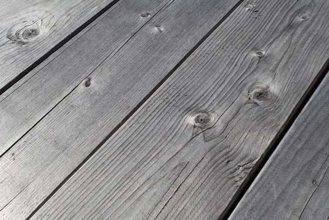

ABOUT
お店のこと
Peoplesは、北海道岩見沢市の山奥、栗沢町万字で2024年7月17日に創業した、パスタとオーガニックハーブティーのお店です。Instagramでは「隠れ家レストラン」と紹介され、完全予約制で、ご予約はInstagramのDMで受け付けているとされています。
街の賑わいから離れた山あいで、予約した人だけがゆっくり過ごす。そんな静かな時間が、このお店の持ち味のようです。
屋号「Peoples」の意味や由来は確認できていません。このサイトの「湯気をひとつ」というコンセプトは制作側のイメージで、お店の公式な理念ではありません。

MENU
お品書き
確認できている提供内容は次の2つです。


SPACE
静かな時間のイメージ
以下はお店の写真ではなく、雰囲気のイメージとして選んだフリー素材です。





VOICE
口コミ(イメージ例)
以下は制作側が作った例文で、実在のお客様の声ではありません。
イメージ例
山道を進んだ先にある一軒で、静かに過ごせました。パスタをゆっくりいただけます。
イメージ例
ハーブティーの香りに気持ちがほどけました。予約制なので落ち着いて話せます。
イメージ例
街から離れた隠れ家のような雰囲気が素敵でした。また季節を変えて訪ねたいです。
ACCESS
アクセス・ご予約
| 住所 | 〒068-3157 北海道岩見沢市栗沢町万字睦町1-3 |
|---|---|
| 電話 | 準備中 |
| ご予約 | 完全予約制(Instagramのプロフィールより。DMで受付) |
| 営業時間 | 準備中 |
| 定休日 | 準備中 |
| @peoples696.manji |